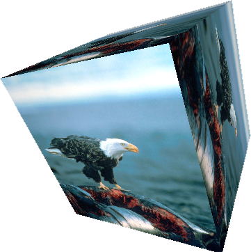
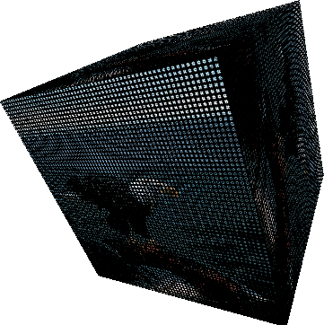
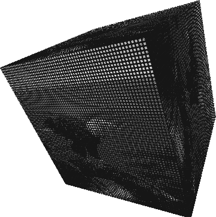
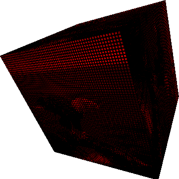
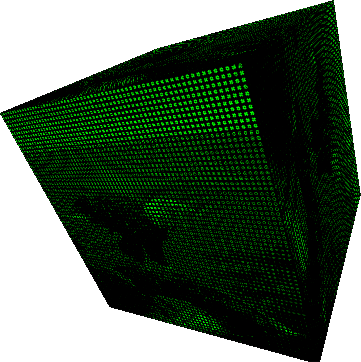
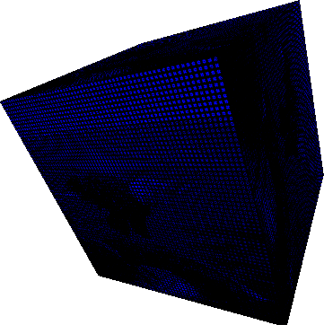
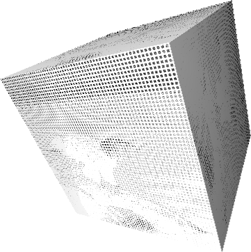
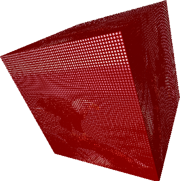
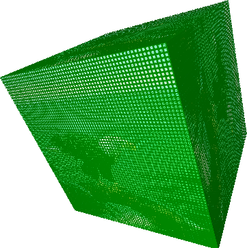
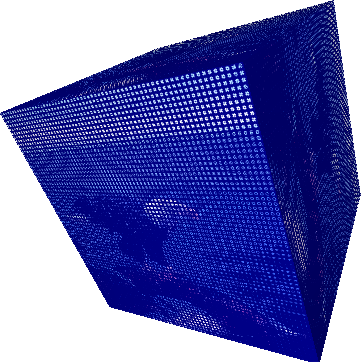

IMAGE AND VIDEO TO ASCII
Shaders and WEBGL
En esta publicación se desea mostrar los resultados obtenidos al realizar el procesamiento de imágenes y videos con shaders utilizando un leguaje de alto nivel, como lo es GLSL, para empezar a aprovechar las características de nuestro hardware y tener resultados muy favorables a nivel de máquina. El cambio y rendimiento, comparado con la velocidad de respuesta es notable en comparación con el procesamiento de imágenes y videos por medio de hardware.
A continuación, se observará cómo se puede obtener una imagen y video a caracteres ASCII. Para ello este ejemplo está inspirado totalmente en el shadertoy expuesto en el sitio shadertoy.com, exceptuando algunas modificaciones para hacer la transición a p5.js; y los tutoriales de shaders del profesor Andres Colubri en el sitio web processing.org y el tutorial de la página itp-xstory.github.io donde se explican conceptos básicos de shaders con p5.js.
Comandos por teclado
| Tecla | Operación con ASCII | Expresión | Imagen resultante |
|---|---|---|---|
 |
Original | - |  |
 |
Color |  |
 |
 |
Escala de grises(Luma) |
 |
 |
 |
Extraer componentes Verde y Azul(Rojo) |
(G,B) = 0.0 |
 |
 |
Extraer componentes Rojo y Azul(Verde) |
(R,B) = 0.0 |
 |
 |
Extraer componentes Rojo y Verde(Azul) |
(R,G) = 0.0 |
 |
 |
Colores opuestos(Complementarios) |
1.0 - |
 |
 |
Aumentar componente Rojo | (R) = (R) + 0.5 |
 |
 |
Aumentar componente Verde | (G) = (G) + 0.5 |
 |
 |
Aumentar componente Azul | (B) = (B) + 0.5 |
 |
Image of Bald Eagle (Haliaeetus leucocephalus) is a bird of prey found in North America. Source: Wikipedia, the free encyclopedia.A bald eagle on a whale carcass
Video Clip of a European honey buzzard, also known as the pern. Source: RawShorts.European honey buzzard (Pernis apivorus), also known as the pern or common pern,is a bird of prey in the family Accipitridae stock video
p5*js Code
let theShader;
let shaderTexture;
let img;
let cam;
let theShaderVideo;
let shaderVideo;
let video;
let angle=0;
let colorAscii = 1;
function preload(){
img = loadImage('https://upload.wikimedia.org/wikipedia/commons/3/34/Haliaeetus_leucocephalus-whale-USFWS.jpg');
video = createVideo('https://dm0qx8t0i9gc9.cloudfront.net/previews/video/hHeEEOX/videoblocks-european-honey-buzzard-pernis-apivorus-also-known-as-the-pern-or-common-pernis-a-bird-of-prey-in-the-family-accipitridae_rzzwhan8i__d5095639625470987e80edb6392f9673__P360.mp4');
video.hide();
// Cargar los shaders
theShader = loadShader('texture.vert','texture.frag');
theShaderVideo = loadShader('texture.vert','texture.frag');
}
function setup() {
pixelDensity(1);
//cam = createCapture(VIDEO); //crea una captura de video
//cam.size(windowWidth, windowHeight); //definde el tamaño de la captura
// Se requiere trabajar con WEBGL
createCanvas(windowWidth, 400, WEBGL);
noStroke();
// inicializar la capa del createGraphics
shaderTexture = createGraphics(512, 512, WEBGL);
shaderVideo = createGraphics(windowWidth, windowHeight, WEBGL);
// Quitar bordes en el createGraphics
shaderTexture.noStroke();
shaderVideo.noStroke();
//cam.hide();
video.loop();
}
function draw() {
// Se pasa el shader a la capa del createGraphics
shaderTexture.shader(theShader);
shaderVideo.shader(theShaderVideo);
// Valores uniform para el fragment shader
theShader.setUniform("u_img", img);
theShader.setUniform("u_key", colorAscii);
theShader.setUniform("stepSize", [1.0/width,1.0/height]);
theShaderVideo.setUniform('u_img', video);
theShaderVideo.setUniform('u_key', colorAscii);
theShaderVideo.setUniform("stepSize", [1.0/width,1.0/height]);
// Renderizar el shader
shaderTexture.rect(0,0,width,height);
shaderVideo.rect(0,0,width,height);
background(255);
// Puntos de luz
pointLight(255, 255, 255, 0, 0, 500);
// Efecto linterna
let dx= mouseX-width/2;
let dy= mouseY-height/2;
pointLight(255,70,70,dx,dy,100);
translate(0, 0, 0);
push();
// Se pasa el shader como textura
texture(shaderTexture);
translate(200, 0, 0);
rotateZ(angle);
rotateX(angle);
rotateY(angle*2);
box(200);
pop();
// Rotacion de la caja
angle += 0.002;
push();
// Se pasa la imagen original como textura
texture(img);
// Numero de puntas de la figura
let ellipseFidelity = int(map(mouseX, 25, width, 8, 100));
ellipse(-250, 0, 350, 350, ellipseFidelity);
//plane(500,500);
pop();
push();
//Se pasa el shader del video como textura
texture(shaderVideo);
translate(0, 0, -100);
plane(900,500);
pop();
}
// Se ejecuta cuando se presiona cualquier tecla
function keyPressed() {
if (key === '0') {
colorAscii = 0;
} else if (key === '1') {
colorAscii = 1;
} else if (key === '2') {
colorAscii = 2;
} else if (key === '3') {
colorAscii = 3;
} else if (key === '4') {
colorAscii = 4;
} else if (key === '5') {
colorAscii = 5;
} else if (key === '6') {
colorAscii = 6;
} else if (key === '7') {
colorAscii = 7;
} else if (key === '8') {
colorAscii = 8;
} else if (key === '9') {
colorAscii = 9;
}
}
function windowResized(){
resizeCanvas(windowWidth, windowHeight);
}Vertex Code
attribute vec3 aPosition;
attribute vec2 aTexCoord;
// Obtener texcoords
varying vec2 vTexCoord;
void main() {
// Copia los texcoords
vTexCoord = aTexCoord;
// Copia la poscicion de los datos en vec4, usando 1.0 como el componente w
vec4 positionVec4 = vec4(aPosition, 1.0);
// Escala la posicion por dos y la mueve al centro de la pantalla
positionVec4.xy = positionVec4.xy * 2.0 - 1.0;
// Envia la informacion del vertex al fragment shader
gl_Position = positionVec4;
}Fragment Code
// These are necessary definitions that let you graphics card know how to render the shader
#ifdef GL_ES
precision mediump float;
#endif
varying vec2 vTexCoord;
uniform sampler2D u_img;
uniform int u_key;
uniform vec2 stepSize;
float character(float n, vec2 p)
{
p = floor(p*vec2(4.0, -4.0) + 2.5);
if (clamp(p.x, 0.0, 4.0) == p.x && clamp(p.y, 0.0, 4.0) == p.y)
{
float a = (floor(p.x+0.5) + 5.0 * floor(p.y+0.5));
if (int(mod(n/exp2(a), 2.0)) == 1) return 1.0;
}
return 0.0;
}
void main(){
vec2 uv = vTexCoord;
// flip the y uvs
uv.y = 1.0 - uv.y;
vec2 pix = gl_FragCoord.xy;
vec3 col = texture2D(u_img, uv).rgb;
float gray = 0.3 * col.r + 0.59 * col.g + 0.11 * col.b;
float n = 4096.0; // .
if (gray > 0.2) n = 65600.0; // :
if (gray > 0.3) n = 332772.0; // *
if (gray > 0.4) n = 15255086.0; // o
if (gray > 0.5) n = 23385164.0; // &
if (gray > 0.6) n = 15252014.0; // 8
if (gray > 0.7) n = 13199452.0; // @
if (gray > 0.8) n = 11512810.0; // #
vec2 p = mod(pix/4.0, 2.0) - vec2(1.0);
if(u_key==1){
col = col*character(n, p);
} else if(u_key==2){
col = gray*vec3(character(n, p));
} else if(u_key==3){
col = col*character(n, p);
col.g= 0.0;
col.b= 0.0;
} else if(u_key==4){
col = col*character(n, p);
col.r= 0.0;
col.b= 0.0;
} else if(u_key==5){
col = col*character(n, p);
col.r= 0.0;
col.g= 0.0;
} else if(u_key==6){
col = gray*vec3(character(n, p));
col.r= 1.0-col.r;
col.g= 1.0-col.g;
col.b= 1.0-col.b;
} else if(u_key==7){
col = col*character(n, p);
col.r= col.r+0.5;
col.r= clamp(col.r,0.0,1.0);
} else if(u_key==8){
col = col*character(n, p);
col.g= col.g+0.5;
col.g= clamp(col.g,0.0,1.0);
} else if(u_key==9){
col = col*character(n, p);
col.b= col.b+0.5;
col.b= clamp(col.b,0.0,1.0);
}
gl_FragColor = vec4(col, 1.0);
}